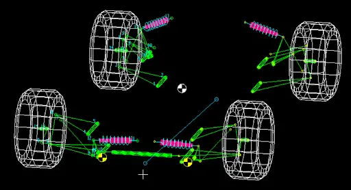
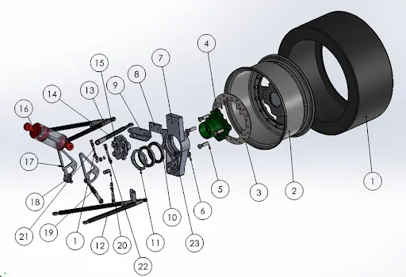
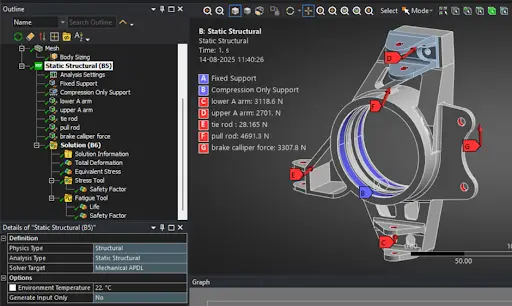
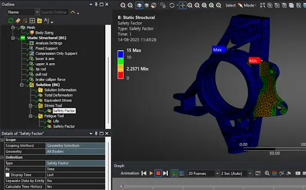

DELIVERING THE
GRIP
THE CAR
DEMANDS.
"Suspension design is a constant trade-off. You cannot optimize every parameter at once. Some gains demand compromises. We choose what matters most, accept the sacrifices, and engineer the best possible balance—because in this domain, the 'best of both worlds' does not exist."
THE MATH OF
MECHANICAL GRIP
"In motorsports, horsepower is useless without mechanical grip. The suspension system and tyre selection determine exactly how much lateral and longitudinal force the car can safely withstand during a lap, which ultimately dictates our lap times."
THE BOLD MOVE:
ZERO ARBs
"We made the strategic decision to completely eliminate both front and rear Anti-Roll Bars (ARBs). This approach drastically simplified our packaging, reduced component complexity, and allowed us to shed significant weight without compromising dynamic stability or suspension performance."

KINEMATICS &
LOTUS SHARK VALIDATION
Our primary objective this season was to implement measurable kinematic improvements while strictly maintaining our mass targets. We utilized Lotus Shark for rigorous suspension kinematics analysis, focusing heavily on optimizing dynamic camber behavior and minimizing bump steer.
Through iterative geometry design, we increased the upper A-Arm inclination with respect to the lower A-Arm to 105° in the front. This specific adjustment successfully brought the Front Instant Center (IC) closer to the wheel.
By bringing the IC closer, we effectively reduced the Front View Swing Arm (FVSA) length. This singular geometric shift yielded a massive 45% increase in dynamic camber with bump compared to our previous prototype, drastically improving mid-corner mechanical grip.

SUBASSEMBLY NOMENCLATURE
& MATERIALS

BOUNDARY CONDITIONS
& FOS
Before manufacturing, every component is subjected to rigorous FEA simulations in Ansys. We apply extreme boundary conditions to ensure that the required Factor of Safety is met under maximum simulated loading conditions, guaranteeing survival through endurance events.

COMPLIANCE &
TOPOLOGY
Static structural heat maps allow us to identify low-stress regions. We perform topology optimization on every component to enable aggressive weight reduction without negatively affecting the part's stress limits or kinematic performance.